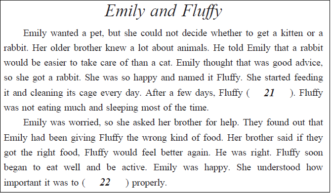
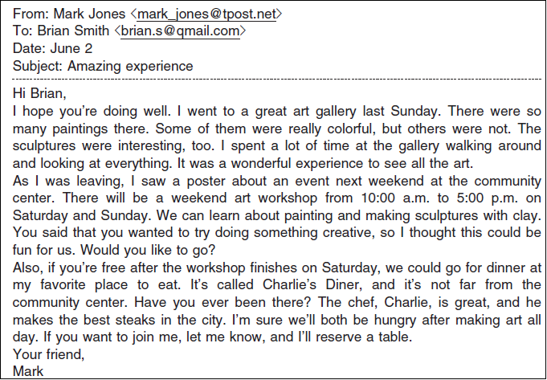

英語検定 準２級(2024年第1回No.3) 残り時間が0になると、自動的に採点します。 時間内に終了する場合は、一番下の「採点する」のボタンを押してください。 残り時間： 分 秒 1-3 英語検定(準２級) 筆記 2024年第1回(No.21～No.25) 各１０点 × ５問 ＝ ５０点満点 次の英文を読み、(21)と(22)に入るものとして最も適切なものを、1～4 の中から一つ選びなさい。  問21 答え： ( 21 ) (1) began to learn some tricks (2) had grown a lot (3) started to look sick (4) escaped from the cage 問22 答え： ( 22 ) (1) use electrical items (2) put her things away (3) do her homework (4) take care of animals 次の英文を読み、(23)から(25)の各質問に最も適切なものを、1～4 の中から一つ選びなさい。  問23 Question: What is one thing that Mark says about the art gallery? 答え： ( 23 ) (1) It had a lot of different artworks there. (2) It was not open when he went on Sunday. (3) It did not take a long time to get through it. (4) It was so big that he could not see everything. 問24 Question: What will happen at the community center next weekend? 答え： ( 24 ) (1) There will be a competition to make the most creative poster. (2) There will be a sale of paintings and sculptures by local artists. (3) There will be a chance for people to learn how to make art. (4) There will be a presentation about different styles of art. 問25 Question: Mark asks Brian if (1) or (2) or (3) or (4) 答え： ( 25 ) (1) Brian lives far from the community center. (2) Brian knows a good place to go to eat steaks. (3) Brian can reserve a table at a diner for them. (4) Brian has been to Mark's favorite restaurant.


 英語検定 準２級(2024年第1回No.3)
英語検定 準２級(2024年第1回No.3)